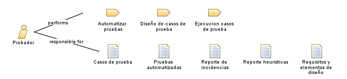

| Role: Probador |
 |
|
Relationships
 |
||
| Categories | ||
|---|---|---|
| Primary Performs | ||
| Additionally Performs | ||
| Modifies |
|
|
Main Description
Es el rol encargado de aportar al diseño del videojuego, diseñar los casos de prueba, desarrollar las pruebas automatizadas, ejecutar pruebas y guiar la aplicación de las heurísticas. |